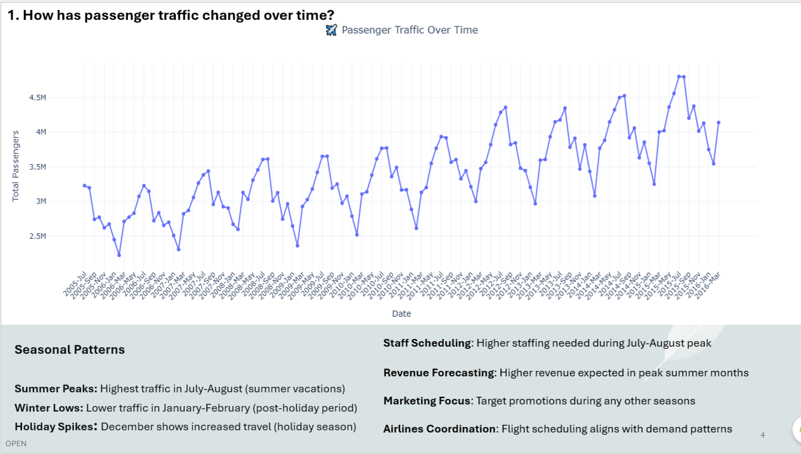
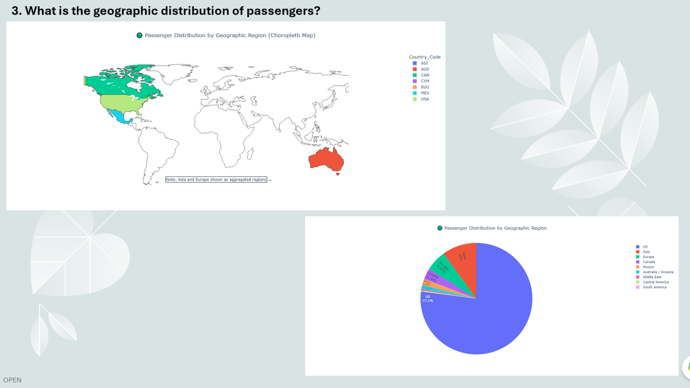
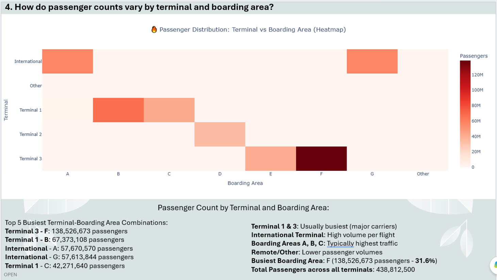
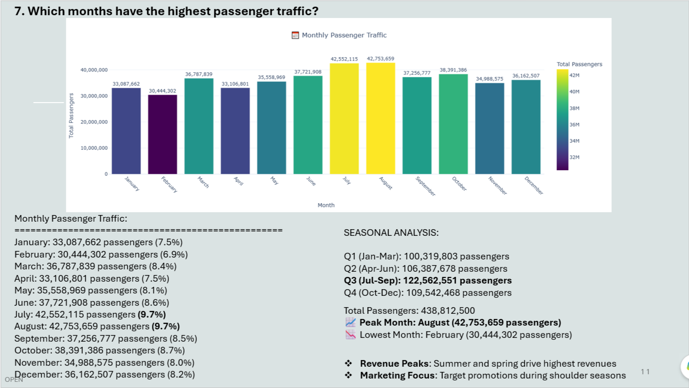
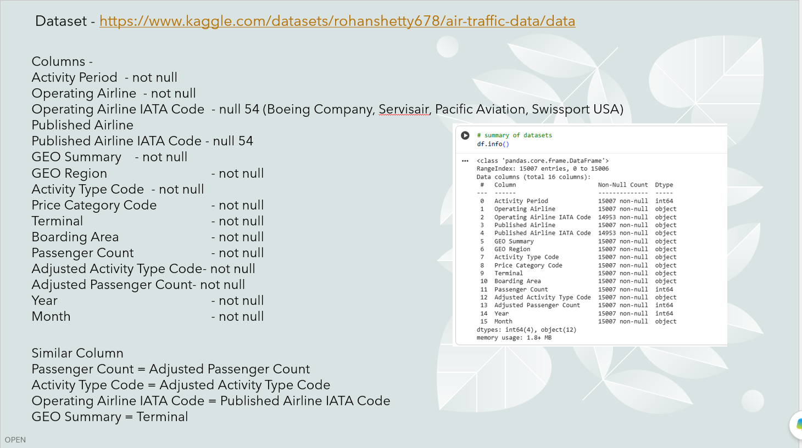

Python Dashboard




Project Overview
This project uses Python to explore and analyze air traffic passenger data, with a focus on passenger trends, airline performance, geographic distribution, terminal activity, boarding areas, activity types, price categories, and seasonal patterns.
The analysis applies data cleaning, transformation, aggregation, and interactive visualization techniques to uncover meaningful patterns in passenger traffic and compare domestic and international travel activity.
Dataset
Air Traffic Data
The dataset was obtained from Kaggle and contains air traffic information covering airlines, geographic regions, activity types, terminals, boarding areas, price categories, and passenger counts over time.
Dataset : https://www.kaggle.com/datasets/rohanshetty678/air-traffic-data/data
Data Preparation
- Dataset loading
- Data inspection
- Column and data-type checks
- Duplicate checking
- Missing-value checking
- Missing-value replacement
- Date transformation
Key fields include
- Activity Period
- Operating Airline , Published Airline
- GEO Summary, GEO Region
- Activity Type, Price Category,
- Terminal, Boarding Area
- Passenger Count, Adjusted Passenger Count
- Year, and Month
Tools & Technologies
Project Brief
01
Loaded the air traffic dataset using Pandas and inspected the first records, columns, and data types.
02
Checked the dataset for duplicate records and missing values to improve data quality.
03
Converted year and month information into datetime fields to support time-series analysis.
Data Cleaning

Interactive Python Project
Explore the interactive Python Project.
Open Python Code →